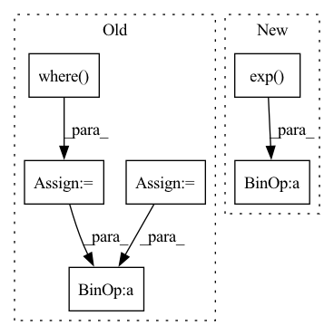

Pattern ID :11023
Before Change
// numerical crimes follow
// q = b ** -x_
q = x_.exp()
sd = s*d
// bdp, bdm = b**d, b**-d
sdm, sdp = (-sd).exp(), sd.exp()
// // censoring
lo_cens = x <= self.lo
hi_cens = x >= self.hi
ones = torch.ones_like(q)
zeros = torch.zeros_like(q)
diff_term = torch.where(
lo_cens | hi_cens, ones, sdp - sdm).log()
// sdm_term = torch.where(
// hi_cens, ones, (q + sdm)).log()
sdm_term = torch.where(hi_cens, zeros, x_ + F.softplus(-sd-x_))
// sdp_term = torch.where(
// lo_cens, ones, (q + sdp)).log()
sdp_term = torch.where(lo_cens, zeros, x_ + F.softplus(sd-x_))
x_or_sd = torch.where( hi_cens, sd, x_)
log_delta_cdf = (
x_or_sd + diff_term - sdm_term - sdp_term
)
// log probAfter Change
r |= {
// "min_sharpness": s.min(),
"max_sharpness": s.max(),
"mean_sharpness": (s* log_pi.exp() ).sum(-1).mean(),
// "min_entropy": ent.min(),
// "max_entropy": ent.max(),
"mean_cmp_entropy": ent.mean(),In pattern: SUPERPATTERN
Frequency: 3
Non-data size: 6
Instances Fragment ID: 37937667
Project Name: intelligent-instruments-lab/iil-python-tools
Commit Name: 3cfb0feff3aa13a704a8a16302c1d7bbde37807f
Time: 2022-03-17
Author: victor.shepardson@gmail.com
File Name: notepredictor/notepredictor/distributions.py
M Class Name: CensoredMixtureLogistic
N Class Name: CensoredMixtureLogistic
M Method Name: forward(3)
N Method Name: forward(3)
M Parent Class: nn.Module
N Parent Class: nn.Module
M File Name: notepredictor/notepredictor/distributions.py
N File Name: notepredictor/notepredictor/distributions.py
M Start Line: 53
M End Line: 99
N Start Line: 54
N End Line: 86
Before Change
colour = "green"
// handle outliers
weighted_segments = np.where( weighted_segments > 1.0, 1, weighted_segments)
weighted_segments = np.where(weighted_segments < -1.0, -1, weighted_segments)
// normalize coefficients: coefficient_i ∈ [0.0, 1.0]
n_weighted_segments = (weighted_segments - weighted_segments.min()) / (
weighted_segments.max() - weighted_segments.min())
// check if volume is bigger than the amount of segments
max_volume = len(np.unique(segment_mask))After Change
n_weighted_segments = (weighted_segments - weighted_segments.min()) / (
weighted_segments.max() - weighted_segments.min())
n_weighted_segments = 1/(1+np.exp( -weighted_segments) )
// check if volume is bigger than the amount of segments
max_volume = len(np.unique(segment_mask))
if volume > max_volume:
volume = max_volume
// differentiate n_weighted_segments with respect to threshold and volume
// values less than max(limit, threshold) are set to 0
limit = np.sort(np.unique(n_weighted_segments))[-volume]
n_d_weighted_segments = np.where(n_weighted_segments >= max(limit, threshold), n_weighted_segments,
0)
// manipulate the original image (quick and dirty)
c = np.array(colours[colour])
image_c = image.copy()
indices = np.argwhere(n_d_weighted_segments != 0)
for i, row in enumerate(segment_mask):
for j, el in enumerate(row):
if el in indices:
image_c[i, j] = ((round(n_d_weighted_segments[el], 1) * c / 127.5) - 1)
return image_c * transparency + image * (1-transparency) Fragment ID: 37937669
Project Name: xai-demonstrator/xai-demonstrator
Commit Name: 4bfcb4fe8565c240b9485a44a437a8acd2d3be07
Time: 2022-02-05
Author: mat.nase@web.de
File Name: guess-the-country/country-backend/country/explainer/new_lime_.py
M Class Name: AnonimousClass
N Class Name: AnonimousClass
M Method Name: generate_visual_explanation(7)
N Method Name: generate_visual_explanation(6)
M Parent Class:
N Parent Class:
M File Name: guess-the-country/country-backend/country/explainer/new_lime_.py
N File Name: guess-the-country/country-backend/country/explainer/new_lime_.py
M Start Line: 163
M End Line: 189
N Start Line: 144
N End Line: 194
Before Change
magnitude = torch.sqrt(real**2 + imag**2)
output_magnitude = magnitude + self.bias
ratio = output_magnitude / (magnitude + self.eps)
ratio = torch.where( output_magnitude >= 0, ratio, torch.zeros_like(magnitude))
real, imag = ratio * real, ratio * imag
output = torch.cat([real, imag], dim=1)
return outputAfter Change
if not is_complex:
input = torch.view_as_complex(input)
magnitude = torch.abs(input)
angle = torch.angle(input)
magnitude = F.relu(magnitude + self.bias.unsqueeze(dim=-1))
output = magnitude * torch.exp( 1j * angle)
if not is_complex:
output = torch.view_as_real(output)
Fragment ID: 37937673
Project Name: tky823/dnn-based_source_separation
Commit Name: 4663266b4fc0a2328bdc62039fb64bdb0beedbf3
Time: 2021-11-17
Author: delta9guitar97@gmail.com
File Name: src/activation.py
M Class Name: ModReLU1d
N Class Name: ModReLU1d
M Method Name: forward(2)
N Method Name: forward(2)
M Parent Class: nn.Module
N Parent Class: nn.Module
M File Name: src/activation.py
N File Name: src/activation.py
M Start Line: 31
M End Line: 39
N Start Line: 45
N End Line: 58